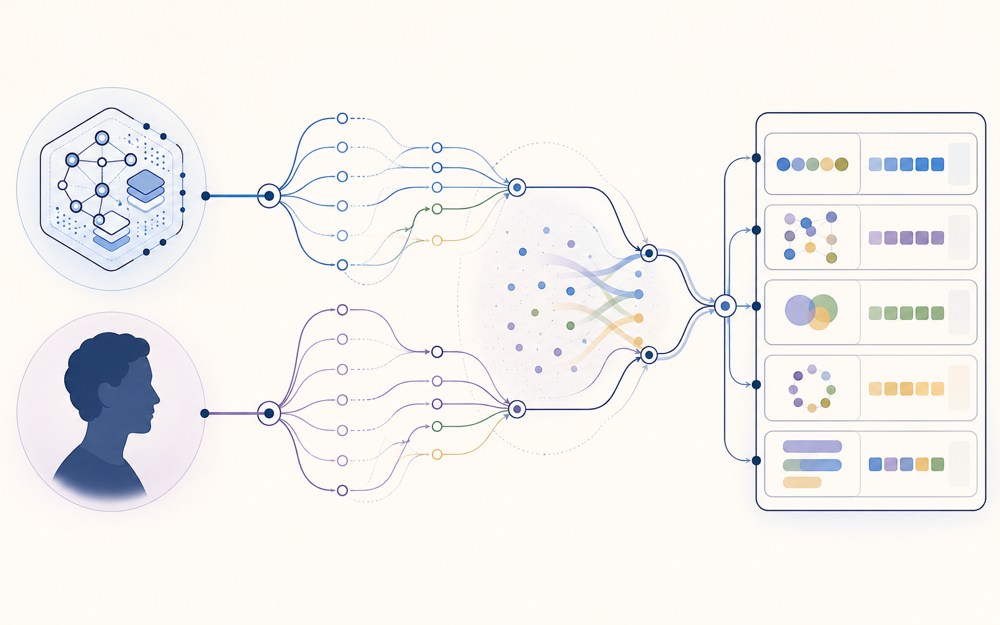

把决策过程讲得更完整，模型给的“行动者感”会更高吗？
研究原型 · v…
决策过程怎么讲，会改变模型对“谁在自己做主”的判断吗？
我让 DeepSeek 扮演旁观者，去给别人的决策打分：这个决策者有多像在自主行动、是否算“有自由意志”。 我只改一件事——把同一个决定的过程讲得更完整（从只报结论，到给出理由、反思和修正）， 看模型的判断会不会跟着变。
这里打分的是模型，不是人。全部结论只描述单一模型在这套材料下的输出，不能证明 AI 拥有自由意志。
研究问题
研究缘起
AI 已经不只是回答问题，它开始参与判断——筛简历、给建议、在系统里替人做选择。 人看到这些输出时，会不自觉地评估“它是不是在自己拿主意”。我想知道：当模型自己去当这个旁观者、 给别人的决策打“自主性”和“自由意志”的分时，它到底在被什么带着走。
这里到底比较了什么
- 同一个决定，贴上 AI 决策者 或 人类决策者 两种身份标签；
- 决策过程用六种方式呈现，从只给结论到给出理由、反思与修正；
- 模型作为旁观者，给出行动者感、自由意志与相关判断的评分。

- 决策主体（AI / 人类）
- 过程描述（六种结构）
- 归因输出（模型评分）
不研究什么
- 不去证明模型“真的”拥有自由意志；
- 不主张 AI 和人在心理机制上是一回事；
- 不把模型的模拟评分当成真实人类被试的数据。
三个具体问题
自由意志的评分，是直接跟着过程走，还是要先经过“行动者感”这一步？
这种变化会不会只是因为文本更长、或模型觉得对方更聪明？
过程结构梯度（Process Structure Gradient）
六种过程从低结构到高结构排列。注意 direct_choice_long 是文本长度诊断条件，
它只加长度、不加真正的理由结构，因此单独标为 length-control diagnostic，不属于结构等级递增的一环。
实验设计
设计很直接：六种决策过程 × 两种身份标签，每一格重复相同次数。诊断条件
direct_choice_long 和 reasons_concise 是特意放进去的——前者只加长度不加结构，
后者只给结构不给长度，用来把“文本更长”和“过程更完整”这两件事分开。
6 × 2 设计矩阵
Historical
真实 DeepSeek API 的历史输出，用于研究结果。公开的是聚合后的评分与图表，原始逐条响应不入公开仓库。
Mock
确定性的合成输出，只用于验证工程流程与持续集成。它不进入任何研究结论。
流程
我把链路分成三段看：历史研究路径是当年真实跑过、产出这批数据的步骤；
当前工程层是 v0.2 才补上的可复现组件；规划是还没做的部分。
configs/ 和 src/freewill_attribution/ 属于当前工程组件，不是历史运行步骤。
A. Historical research path
- Historical条件与刺激src/stimuli.py / src/scales.py
- HistoricalPrompt 构造历史运行脚本；exact prompt snapshot/hash unavailable
- HistoricalDeepSeek API 响应历史运行
- Historical解析与量表记录outputs/scale_scores.csv
- Historical分析与报告outputs/*.md、outputs/plots/
当前 configs/prompt.v1.yaml 是当前配置组件，不能替代缺失的历史精确 prompt snapshot/hash。
B. Current engineering layer
- Completed locallyPackage / safe paths / wrappersrc/freewill_attribution/、scripts/run_all.*
- PartialSchema / config（未接入正式 runner）configs/
- Current站点数据导出 / 静态展示页site/、scripts/build_site_data.py
C. Planned
- PlannedFormal runner / RunManifest / provider abstraction（规划中，非当前能力）
历史结果
下面的每个数字都由 scripts/build_site_data.py 从 outputs/ 的分析文件里读出来，
没有重新分析、没有改动原结论。读的时候记住两点：这批数据来自一个模型；行动者感（agency）和自由意志归因是
两个不同的结果，不要混着看。统计细节都收进了每张卡片下方的“展开统计”里。
已有结果图表
三张图均来自历史 DeepSeek API 输出的既有分析结果。点击图表可以放大查看；图下分别标注读图说明、来源与证据边界。
条件比较
横条长度按条件均值/检验值缩放，仅用于快速比较大小，具体数值见各卡片。
探索性路径图（Exploratory Path Diagram）
两条并行的间接路径。仅当区间不跨 0 时，才说该探索性估计方向一致；这不是因果中介证明。
工程核心与验证
除了历史研究结果，这个仓库还有一条可复现的工程主线。下面把公开演进讲清楚： 从历史研究基线，到可复现工程核心，再到确定性 mock 验证， 最后才是真实模型试点（尚未运行）。这里展示的所有 mock 指标都只用于验证工程链路， 不是真实模型结果，也不代表已完成任何公开基准。
公开演进
Mock 执行质量
下列比率来自确定性 mock 验收运行（每格 2 条、共 24 条），用于验证解析、schema 校验与运行产物链路。 确定性 mock：非真实模型输出，不进入研究结论。
Provenance 完整性
每个维度标注是否可由仓库内容独立验证；标为 unknown 的维度不会被补写成确定事实。
运行产物链
每次 mock 运行按固定顺序产出以下带哈希的产物，写入 artifacts/runs/<run_id>/；历史 outputs/ 永久只读、互不覆盖。
证据与局限
我把“能说的”和“不能说的”分成三档，方便快速判断这份结果的边界。
Directly supported
- 操纵检验反映出低结构与高结构条件的整体差异（不主张六类严格单调或两两显著）。
- 行动者感随过程结构总体上升，是最稳定的主结果。
- 控制感知智能与文本长度后，过程对行动者感仍显著。
- 理由/反思结构比单纯拉长文本更能提高行动者感。
Partially supported
- 自由意志的直接效应不稳定，更像经由行动者感间接发生。
- 探索性估计中，agency 间接效应区间未跨 0。
- 感知智能间接效应区间跨 0。
- 责任相关维度方向不如行动者感稳定，仅作探索性呈现。
Not claimed
- 不声称模型真的拥有自由意志或与人类同构。
- 不把结果外推到其他模型或真实人类心理。
- 不声称这是机制证明（中介为探索性诊断）。
- 不声称结果已通过人类被试的信效度检验。
三件事不要混为一谈
Data authenticity
数据来源真实：这批记录确实来自 DeepSeek API 的历史调用。
Run auditability
运行可审计性不足：缺完整运行清单、服务端模型版本、时间戳、token、费用、prompt/依赖哈希。
Full reproducibility
尚不能完全复现：元数据缺失使得无法逐字节重放当时的响应。
这批历史记录建立了什么
- 一套可被模型区分的 6×2 决策过程材料；
- 行动者感随过程结构变化的稳定模式；
- 一条可供后续正式研究检验的中介路径假设。
不完整的 provenance 限制了什么
- 无法重放历史运行、无法核对服务端模型版本；
- 无法给出 token/费用等运行级成本；
- 只能保证数据来源真实，不能保证逐字节可复现。
未来实验需要补上什么
- 盲化构念名、修订 prompt 暴露策略；
- 正式 runner 记录完整运行清单与哈希；
- 多模型执行与人类被试的信效度检验。
可复现性
我把“数据来源可信”和“运行可复现”分开处理。下面这条组件链，前面几环本地已经能跑， 最后一环（正式 runner）还没做——所以现在能复现的是工程流程，还不是历史模型运行本身。
- 历史基线docs/audit/baseline_hashes.txt
- 冻结的 outputsoutputs/
- 依赖锁定uv.lock
- Package CLI（mock-only）src/freewill_attribution/
- 安全输出路径显式 --out
- Schema / configconfigs/
- CI 配置.github/workflows/
- 跨平台 wrapperscripts/run_all.*
- 正式 runner + manifest（规划中）
现在能复现什么
- 在 Windows 本地使用锁定依赖跑通 mock 流程；Bash wrapper 完成 Git Bash compatibility validation；
- 从
outputs/重新派生展示页数据并校验一致； - 校验历史基线的内容哈希未变。
现在还不能完全复现什么
- 真实 Linux 与 GitHub-hosted Windows/Linux 验证仍待发布阶段完成（Git Bash 不等于 Linux 验证）；
- 逐字节重放历史 DeepSeek API 的真实响应；
- 核对服务端模型版本、token 与费用。
持续集成：configured, remote verification pending （已配置 Windows + Linux 矩阵，远程验证待完成）。
版本历史
路线图
研究主线 Phase 1–7 与展示线 Track S 并行推进。Phase 1 的本地实现已完成，但发布验证还没做， 所以它同时带两个状态。当前阶段高亮，未来阶段刻意弱化。
研究主线（Phase 1–7）
展示线（Track S）
仓库链接
按你想做的事挑入口，每条后面写清用途。
- 先看项目概览一屏抓住研究什么、做到哪、不是什么
- 查看研究方法6×2 设计、诊断条件与测量维度
- 查看历史结果条件均值、控制回归、探索性中介与图表
- 查看证据限制能说什么、不能说什么、复现边界
- 查看复现说明组件链与文件级证据
- 查看路线图研究主线与展示线的当前进度
- 查看源码GitHub 仓库根链接
仓库内文件（位于 GitHub 仓库中）
以下为仓库内文件路径；本地静态预览下不做相对链接，永久链接待 REL-001 确定发布分支与 commit 后生成。
docs/research_design_blueprint.md研究方法，位于 GitHub 仓库中outputs/final_simulated_pilot_report.md结果报告，位于 GitHub 仓库中docs/audit/v1_provenance_statement.mdprovenance 声明，位于 GitHub 仓库中